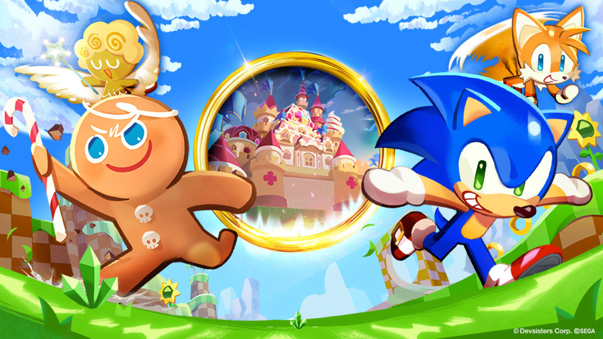
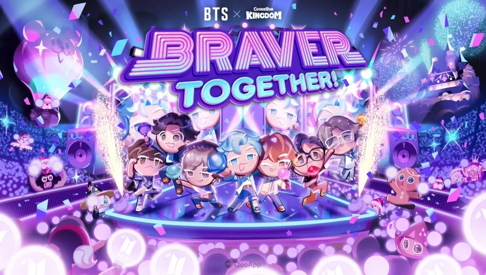
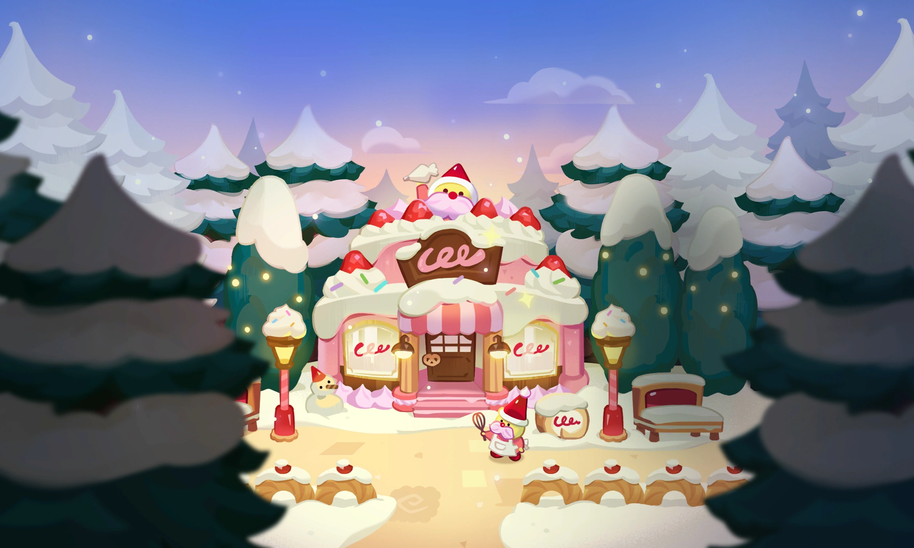
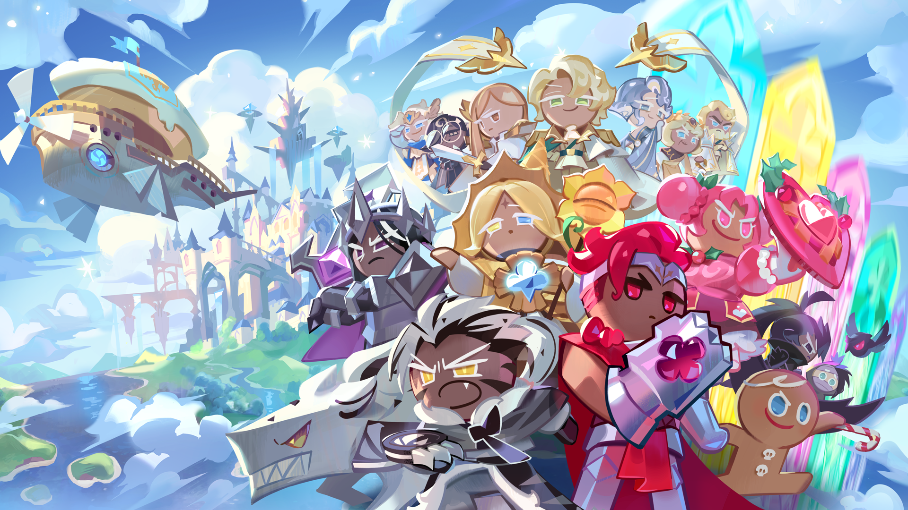
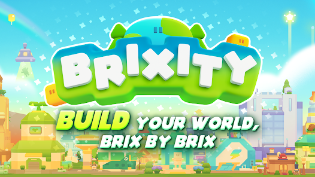
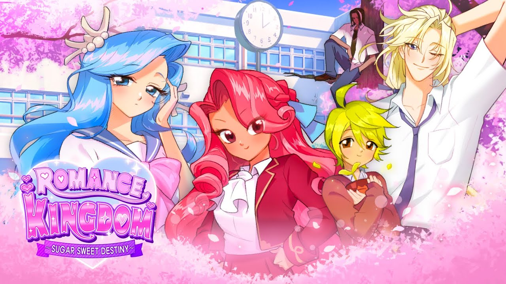
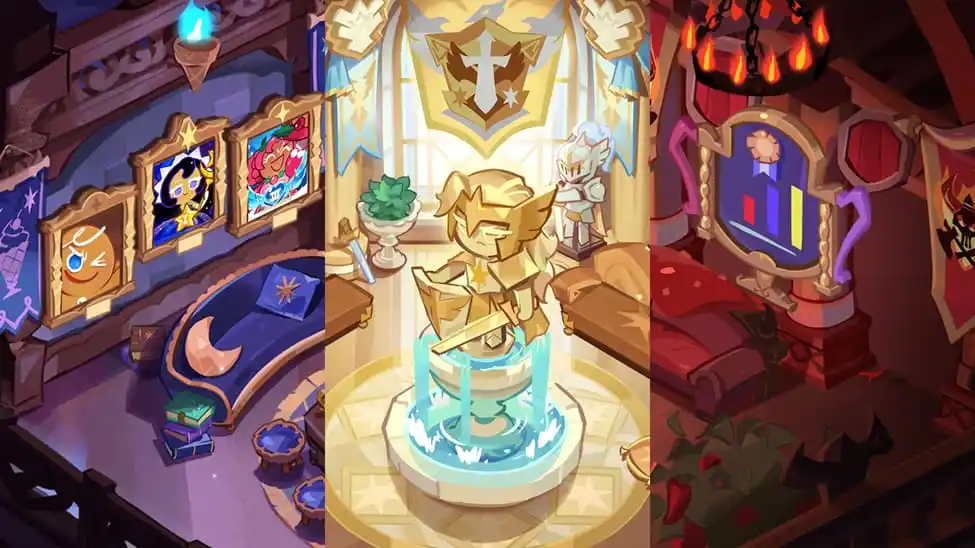

Eventos

Los eventos en Cookie Run: Kingdom generalmente ofrecen jugabilidad y abundantes recompensas y son una fuente constante de muchos recursos valiosos. La gran mayoría de los eventos tienen una duración limitada, aunque siempre se agregarán nuevos en cada actualización para garantizar un flujo constante de recompensas.

Eventos cruzados sónicos
Los eventos Sonic Crossover fueron eventos por tiempo limitado que coincidieron con el lanzamiento limitado de Sonic Cookie y Tails Cookie, así como con el modo de juego eventos cruzados sónicos y el tema decorativo Bienvenido a Green Hill. Comenzaron el 17 de septiembre de 2021, finalizaron el 16 de octubre de 2021 y duraron 30 días. En estos Eventos, los jugadores recolectaran las Soulstones de Sonic y Tails para obtener y promocionar las dos Cookies.
Concierto de BTS
BTS Concert es un modo de juego por tiempo limitado lanzado en Braver Together! actualización como parte del crossover BTS x Cookie Run: Kingdom. Se lanzó el 13 de octubre de 2022 y finalizó el 19 de enero de 2023. En él, los jugadores actúan en Rhythm Stages para recolectar bombas Army, así como para seguir la historia de BTS, el calor del concierto. Las entradas para el concierto deben gastarse para tocar en un escenario.
Caza del jefe
Boss Hunt es un modo de juego de temporada introducido en la actualización Summer Soda Rock Festa, su evento correspondiente. Comenzó el 5 de julio y finalizó el 20 de julio de 2023. Cada temporada se compone de una selección de jefes, en cada nivel de dificultad, los jugadores luchan contra un orden establecido de jefes. Todas las batallas contra jefes funcionan de manera similar a las batallas de gremios, donde el jefe conserva su HP agotado. Derrotar a un jefe recompensas variadas.
Pastelería navideña
La pastelería navideña de los gnomos de azúcar fue un evento de tiempo limitado agregado durante la actualización Historias junto a la chimenea. Se trataba de armar pasteles personalizados ordenados por Cookies. Evento Para hornear un pastel, los jugadores deben gastar 10 mangas pasteleras de panadero, una moneda de resistencia exclusiva del evento que se repone a un ritmo de una cada 45 minutos.
Picnic de primavera
El picnic de primavera de Cherry Blossom Cookie fue un conjunto de eventos por tiempo limitado que coincidió con el lanzamiento de Cherry Blossom Cookie . Comenzó el 18 de abril de 2022 y finalizó el 3 de mayo. Galleta de flor de cerezo En estos eventos, los jugadores completaron misiones para recolectar Blooming Picnic Dice, que se usaron para rodar en un tablero para recolectar pétalos de flor de azúcar y otras recompensas aleatorias. Se requerían pétalos de flor de azúcar para comprar decoraciones del tema de decoración Springtime Blossom Picnic Party por tiempo limitado.
Odisea
Se compone de capítulos, y cada capítulo consta de varios días. Cada día consta de múltiples historias que deben desbloquearse con Odyssey Quills, un recurso que se obtiene al completar Odyssey Missions. Los jugadores son libres de desbloquear cualquier historia disponible con sus Quills, y algunas historias provocan que aparezcan historias adicionales. Una Odyssey Quest puede aparecer después de ciertas historias, lo que puede revelar una historia adicional al finalizar.
BOO! Mascarada de Halloween
Es un evento de tiempo limitado que coincide con el lanzamiento del disfraz Gacha , Pumpkin Pie Cookie y la historia de Halloween correspondiente en la actualización Mascarada de Halloween. En él, los jugadores completan misiones relacionadas con el reino y los disfraces para adquirir recompensas, en particular grandes sumas de Rainbow Cubes. Completar misiones también desbloquea segmentos de la historia de Halloween. Galleta de pastel de calabaza
Evento de lanzamiento de BRIXITY
El evento de lanzamiento de BRIXITY es un evento por tiempo limitado que se lanza en la actualización de A Mermaid's Tale para promover el lanzamiento de BRIXITY . Se desarrollará desde el 24 de agosto de 2023 hasta el 18 de septiembre de 2023. En este evento, los jugadores completan tareas en BRIXITY para recibir diversas recompensas y artículos decorativos limitados. Los jugadores deben conectar una única cuenta DevPlay a sus cuentas Cookie Run: Kingdom y BRIXITY para recibir tokens de restauración de la Tierra.
Reino romántico
Ambientado en la idílica escuela secundaria Kingdom High, Romance Kingdom es un evento estilo simulador de citas basado en historias que parodia las novelas visuales japonesas de principios de 2000. En él, un jugador puede tener un romance con Cookies humanizadas de la escuela secundaria (con distintos niveles de éxito), siendo los posibles intereses amorosos Rachel Raspberry, Herbert Hoo, Marcus Madeleine, Derek DaChoco y Serena Faire.
Copa Triple Cono
La Copa Triple Cono es un evento histórico que existe desde que se construyeron las tres escuelas de Earthbread. Está la única y prestigiosa escuela de magos, Parfaedia, la escuela de nobles paladines con más victorias, los Crème Knights , y la ardiente escuela de guerreros, Scovillia. Los jugadores son clasificados aleatoriamente en una de estas tres escuelas, donde pueden encontrarse con sus compañeros de clase en las dependencias de estudiantes.
¡Suscríbete para recibir noticias sobre cookie run y los eventos!